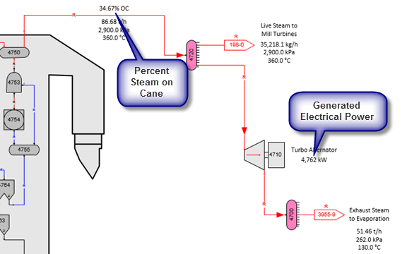
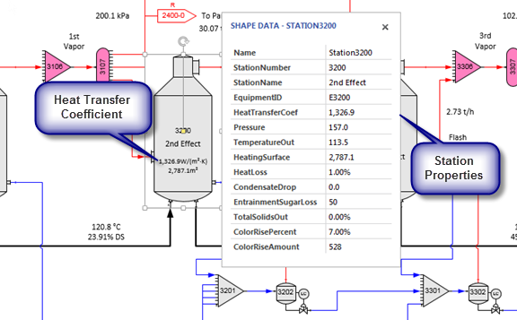

Every flow stream and station in a model has a Visio ShapeSheet. After every balance calculation, Sugars writes data to the Shape Data which is in a section of the ShapeSheet. Also, some stations contain data that are a result of the balance calculations and this data is written to the Shape Data in the ShapeSheet for the station. Visio has the ability to display flow stream and station properties on the drawing using Shape Data. Also, calculations can be made using this data and they can be placed on the drawing in any location. For example, percent on cane and generated electrical power are shown on the drawing snippet shown below. Steam percent on cane is from the quantity of live steam from the boiler divided by the quantity of cane into the model. Each quantity is from the Shape Data for their respective flow stream. Generated electrical power is from the Shape Data associated with the Turbo Alternator station number 4710.

Other values shown on the drawing are from the Flow Legend display (see Overview > Results). For example, the quantities of steam (t/h), pressures (kPa) and temperatures (ºC) are displayed using the Sugars right click drop-down menu Flow Legend selection for displaying balance results.

The figure above shows the Station Properties (called Shape Data in Visio) for station no. 3200, 2nd Effect. Any of these values can be displayed on the drawing (Heat Transfer Coefficient and Heating Surface are shown for the 2nd Effect) and they can be used in calculations to provide other information. They can even be used in an Excel spreadsheet that is either embedded in the Visio document or external to it (see Exporting Data to Excel). Balance results can be manipulated and displayed in a variety of ways. The Shape Data window is displayed by clicking the box next to the “Shape Data Windows” selection in the “Show/Hide” group on the Visio DATA tab. Instructions for displaying Shape Data and building calculations are given below.
Displaying Visio Shape Data
After each balance, Sugars will update all of the Visio Shape Data; however, on the Sugars ribbon menu, click the Users Preferences icon to see entries to select either updating all of the Shape Data or only the ones that changed during a balance. Selecting "Update Only Changed Values" will make drawing updates occur faster. The default is to "Update All Values" to make sure that the values are always updated, but if you have not made any changes to any of the values using the Visio ShapeSheet for a station, then updating only the changed values gives the best performance and for most users this is the preferred setting.
Referencing Shape Data values for display on your drawing is done using the Visio INSERT tab and then selecting Field from the text group. First, create a text block using the Text tool in the Tools group on the HOME tab. Visio Help gives the details, but as an example, to display the Electrical Power Output produced by the turbo alternator station no. 4710 in the Cane Factory (Milling) example can be displayed by creating a text field on the same page as the station and then clicking the INSERT tab and selecting Field from the Text group. When the Field dialog is displayed, click on “Custom Formula” and in the "Custom formula:" entry box enter:
=Station4710!Prop.ElectricalPowerOutput.Value
The “Value” at the end is optional. The format for the number displayed is selected by clicking on the Data Format… button and select “Number” in the category selection box. To add units to the displayed number, create another field inside the same text box and insert another field next to the power output number as follows.
=Station4710!Prop.ElectricalPowerOutput.Prompt
This will give the same units for the electrical power output that Sugars uses in the Turbo Alternator Properties dialog. The same procedure is used to display flow stream data. You can quickly see the label for a station (e.g., Station4710 in the above examples) or flow stream by using the Shape Data Window to display Shape Data for stations and flow streams as you click on them.
Calculations can be done using Shape Data for creating your own results using the results from the Sugars balance calculations. For example, to display the difference between two values, in the field from the insert menu you would type:
=1st custom property reference - 2nd custom property reference
Other math operators are the usually ones (e.g., +, * and /).
To display a Shape Data value of a station that is on another page, the Sheet ID has to be used instead of the shape name. The Sheet ID for a shape is obtained from the DEVELOPER tab. Visio Developer Mode is necessary to make the DEVELOPER tab active by clicking FILE > Options > Advanced and then click the box for "Run in developer mode" (see screen below). Click the OK button to return to the drawing window.
The Sheet ID is given by the Shape Name selection in the Shape Design group at the top of the window where "ID: XXX" with XXX as the ID number.
For an example, to display the heat transfer coefficient for an evaporator body on a page that does not contain the evaporator body, make a text box then click the INSERT tab and then Field in the “Text” group. In the Custom Formula category enter:
=Pages[Evaporation]!Sheet.15!Prop.HeatTransferCoef
Where, "Evaporation" is the name of the page containing the shape and Sheet.15 is the sheet ID from the Shape Name dialog box for the 1st effect evaporator body on the "Evaporation" page of the Cane Factory (Milling) example.
The fact that it is necessary to use the sheet ID instead of the shape name when referring to a shape that is on a different page than the active page is a programmed characteristic of Visio. Also, if the shape is a connection and it is edited later, Visio changes the name “Sheet” to “Dynamic connector” and this name has to be changed back to “Sheet” before the field will be accepted in versions of Visio earlier than 2013.
Another example is the following to display the % on cane of the generated boiler steam in the Cane Factory (Milling) example.
=(Fr4704_0!Prop.FlowRate/Pages[Milling]!Sheet.294!Prop.FlowRate)*100
Where, “Milling” is the page with the flow rate of cane into the model for flow stream "Sheet.294".
The general syntax for property references is:
Pages[<PageName>!]<SheetID>!<PropRef>
For example, to reference the temperature out value of a shape with ID = 83 on the 1-Diffusion page, the following would be entered in the Custom Formula field of the INSERT > Field dialog.
Pages[1-Diffusion]!Sheet.83!Prop.TemperatureOut.Value
Also, Sheet ID’s need to be used instead of the shape name when referencing Shape Data for shapes that are in groupings from the Sugars stencils. For example, the following would be used to display the temperature out of a blender station in a grouping with a sheet ID of 284.
Sheet.284!Prop.TemperatureOut